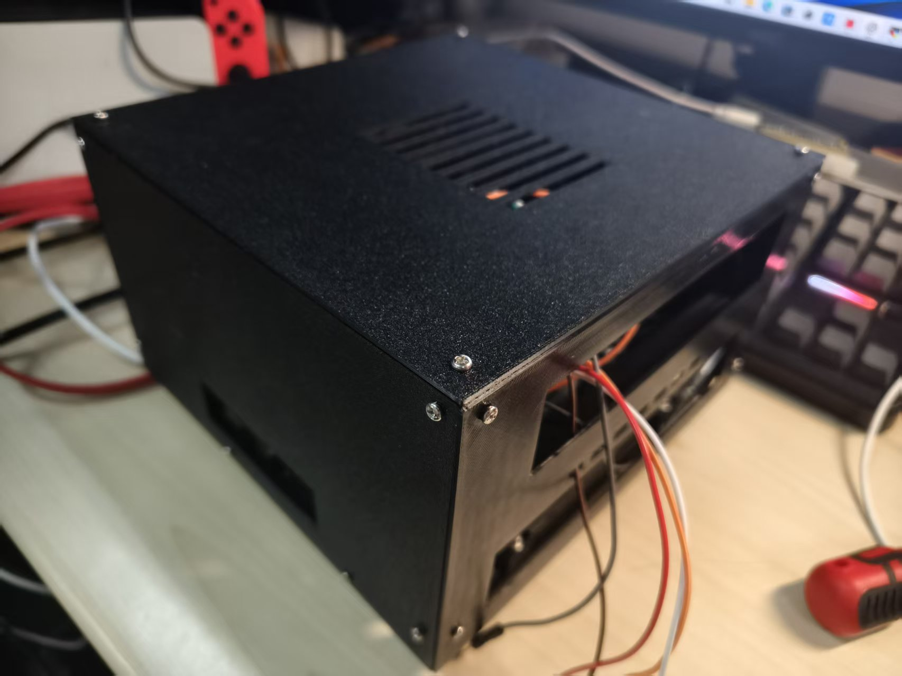
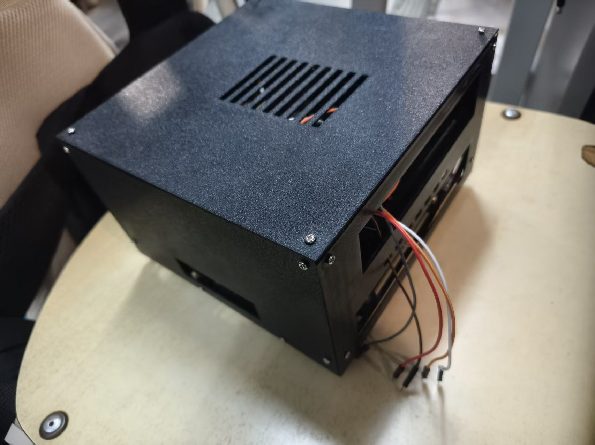
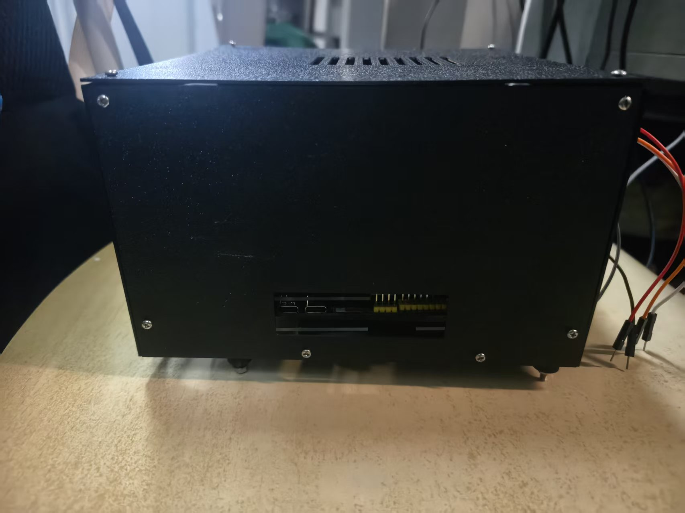
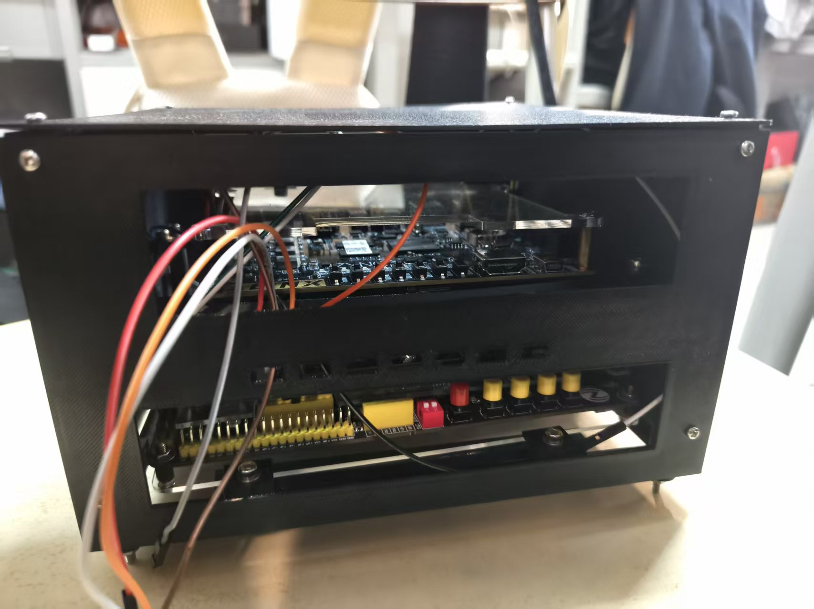
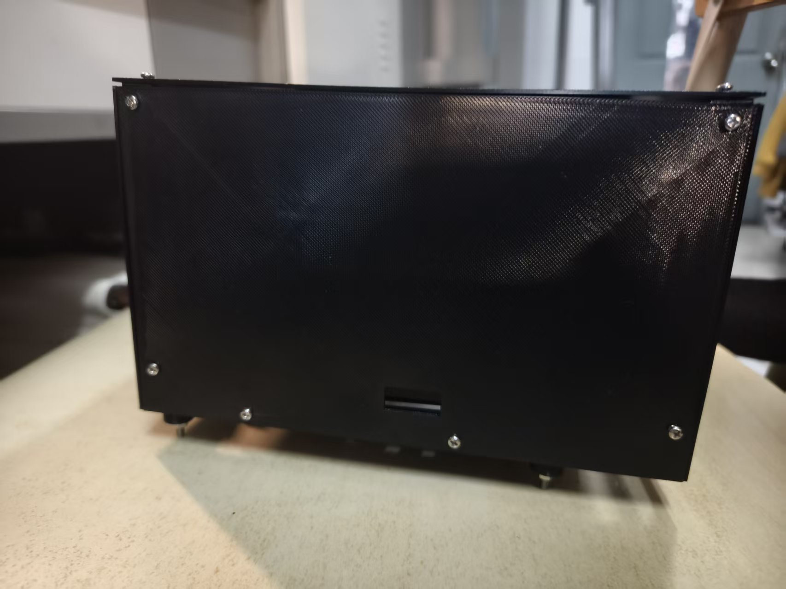
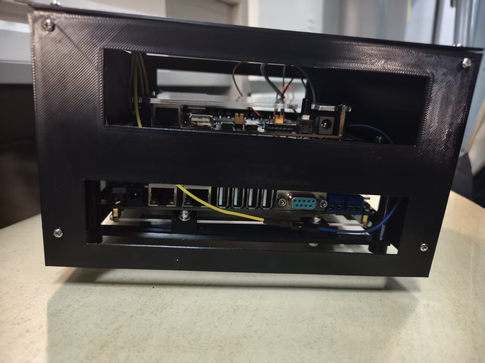
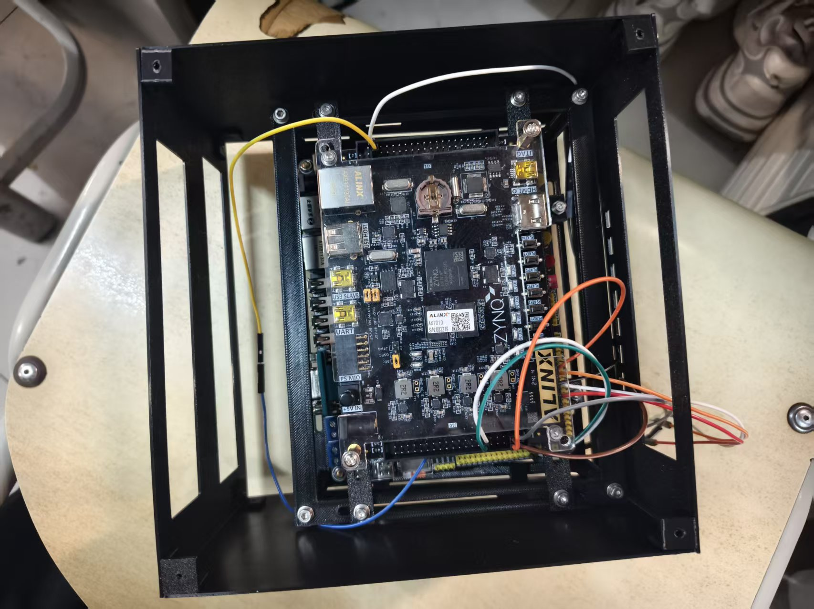
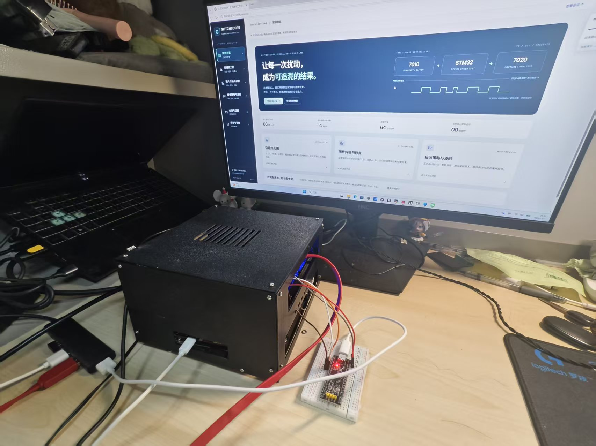

8张原始照片 · 2026-11-02归档 · 点击照片查看原图
实际装配反馈：打印件无修改，无顶碰、无松动，网线、电源及USB正常插拔。
依据：原始照片与用户实际检查反馈。

外罩、顶盖通风槽、面板螺钉及引出线。

外壳完成状态、顶盖与相邻面板。

侧面开口与下层板卡接口。

上下叠放布局、亚克力与外引线束。

面板固定、下部开口及底脚。

上层7010与下层7020接口窗口、下层亚克力及压块可见。

上层AX7010、安装梁、螺钉和线束；下层板卡被部分遮挡。

外壳装置、壳外STM32、电脑及网页工作台；此照片本身不证明全部功能验收。